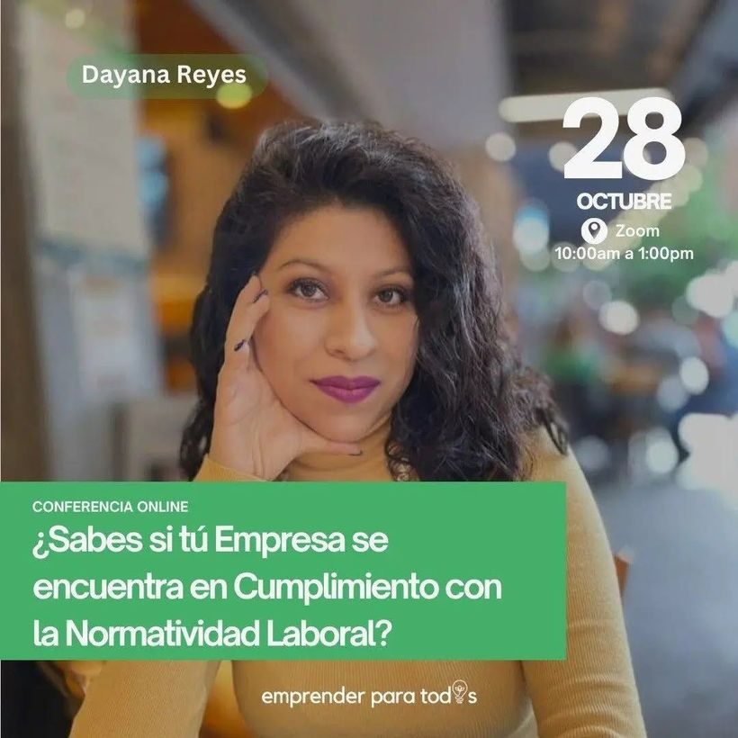
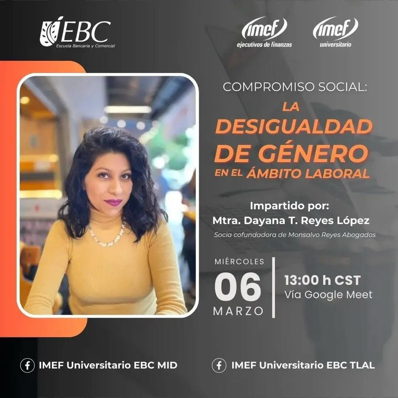
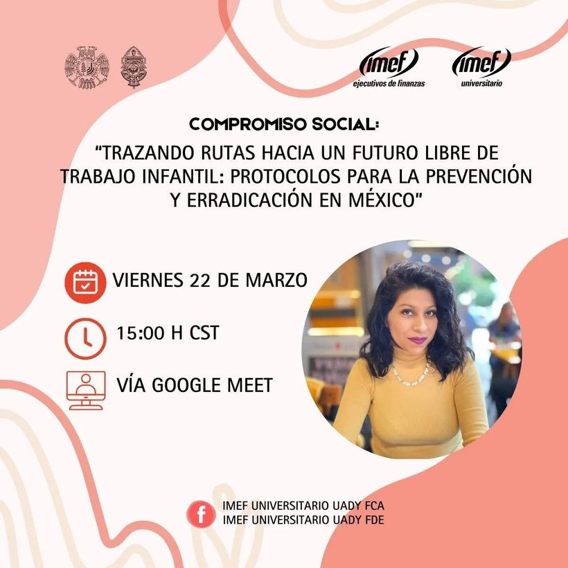
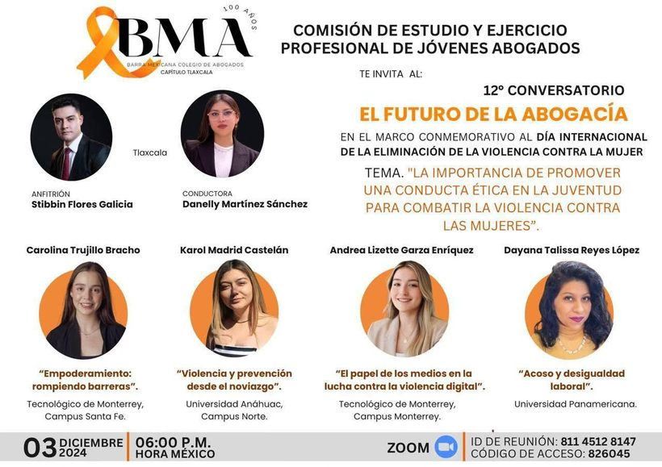
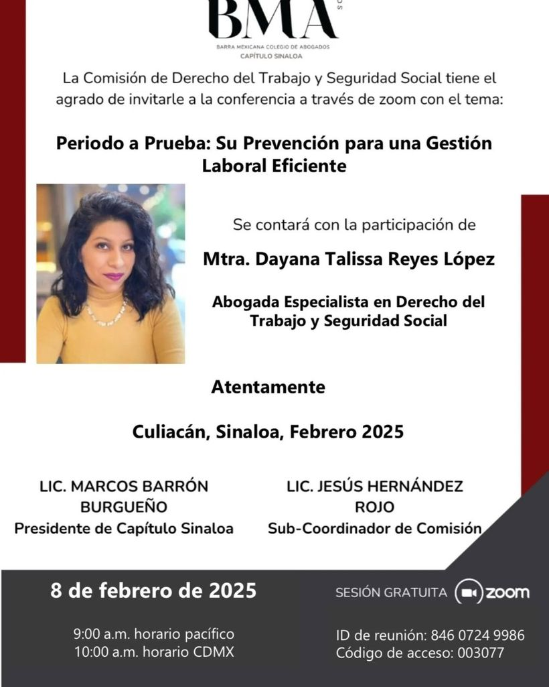
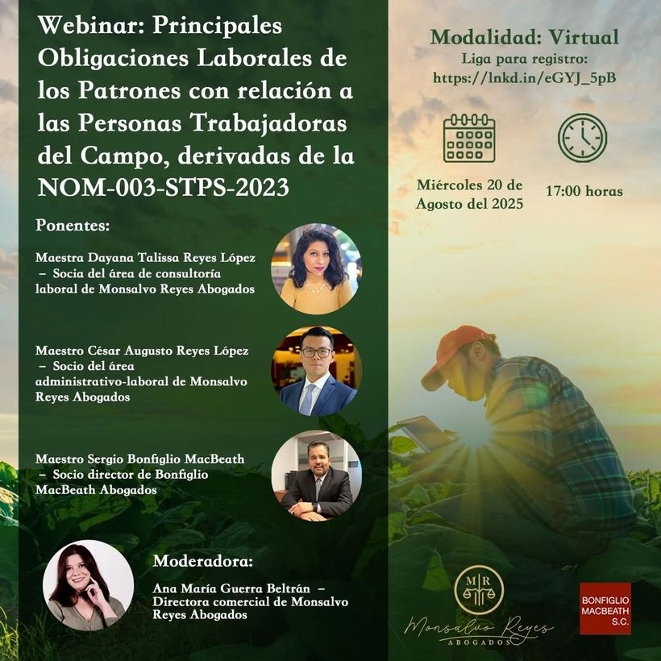
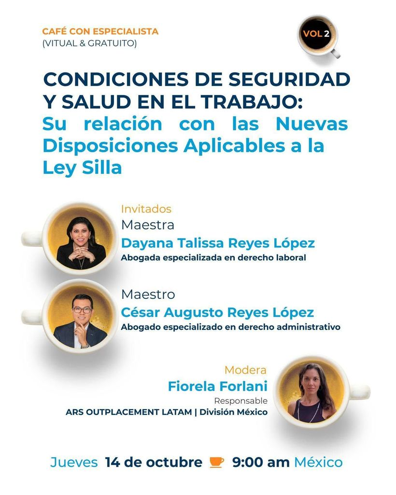
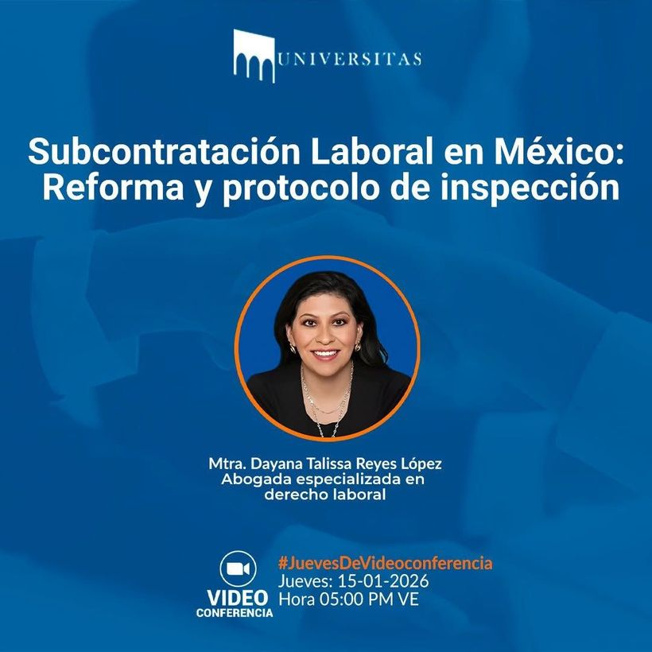

Women in Games
¿Conoces tus Derechos y Prestaciones Laborales?
Conferencia de divulgación sobre derechos y prestaciones laborales.
Sesiones y webinars transmitidos en línea por la Mtra. Dayana Reyes López para universidades, colegios de abogados, cámaras empresariales y comunidades profesionales.
Asociación de Profesionistas de Compliance A.C., CENYCA Universidad y Rufo Ibarra Consultores · vía Zoom
Participación como ponente con el tema «Compliance Laboral» en este encuentro internacional que reunió a más de 20 especialistas de 9 países para promover la cultura del Compliance. La Mtra. Dayana Reyes recibió constancia de participación y un agradecimiento especial por su contribución al fortalecimiento de la cultura de cumplimiento, integridad y buenas prácticas.
Women in Games
Conferencia de divulgación sobre derechos y prestaciones laborales.

Campus Tecnológico de Monterrey
Conferencia sobre cumplimiento normativo laboral dirigida a la comunidad universitaria.

IMEF Universitario EBC MID y EBC TLAL
Conferencia sobre la brecha y la desigualdad de género en el entorno de trabajo.

IMEF Universitario UADY FCA y UADY FDE
Conferencia sobre los protocolos de prevención y erradicación del trabajo infantil en México.

Comisión de Jóvenes Abogados de la Barra Mexicana, Colegio de Abogados — Capítulo Tlaxcala · 12º Conversatorio "El Futuro de la Abogacía"
Ponencia en el marco del Día Internacional de la Eliminación de la Violencia contra la Mujer.

Comisión de Derecho del Trabajo y Seguridad Social de la Barra Mexicana — Capítulo Sinaloa
Análisis del periodo a prueba y su correcta gestión preventiva en las relaciones de trabajo.

Webinar · 20 de agosto de 2025 · en colaboración con Bonfiglio MacBeath, S.C. y Monsalvo Reyes Abogados
Obligaciones patronales en el trabajo del campo conforme a la NOM-003-STPS-2023. Ponentes: Mtra. Dayana Talissa Reyes López, Mtro. César Augusto Reyes López y Mtro. Sergio Bonfiglio MacBeath. Moderadora: Ana María Guerra Beltrán.

Café con Especialista · en colaboración con Ars LATAM — División México
Vínculo entre las condiciones de seguridad y salud en el trabajo y las nuevas disposiciones de la Ley Silla.

Fundación Universitas
Panorama de la reforma en materia de subcontratación y del protocolo de inspección aplicable.